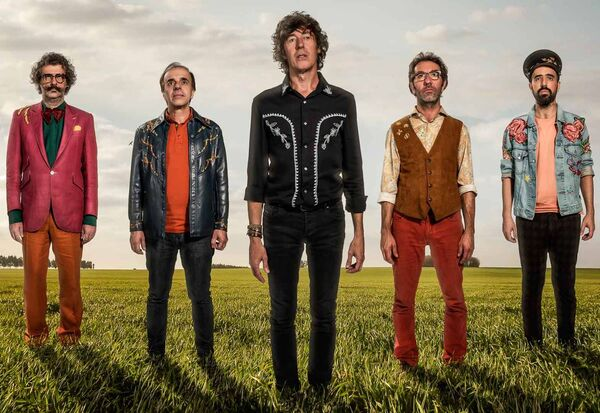

El Cuarteto de Nos es una banda de rock uruguaya formada en Montevideo en 1980.
| Año | Disco |
|---|---|
| 1984 | Alberto Wolf y el Cuarteto de Nos |
| 1987 | Soy una Arveja |
| 1988 | Emilio García |
| 1991 | Canciones del corazón |
| 1994 | Otra Navidad en las Trincheras |
| 1995 | Barranca abajo |
| 1996 | El tren bala |
| 1998 | Revista ¡¡Ésta!! |
| 2000 | Cortamambo |
| 2004 | El Cuarteto de Nos |
| 2006 | Raro |
| 2009 | Bipolar |
| 2012 | Porfiado |
| 2014 | Habla tu espejo |
| 2017 | Apocalipsis Zombi |
| 2019 | Jueves |
| Lamina once fue su ultimo disco | |